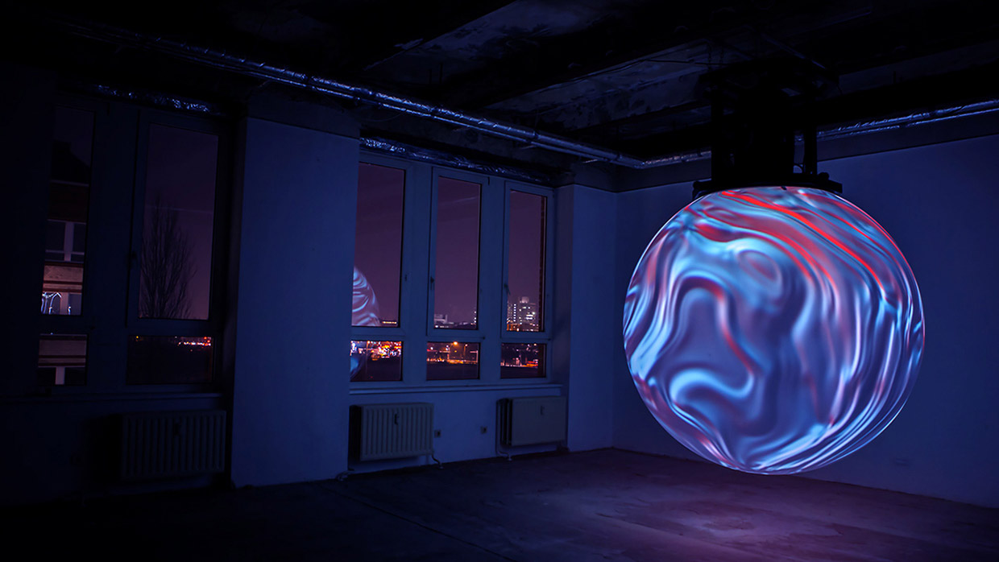
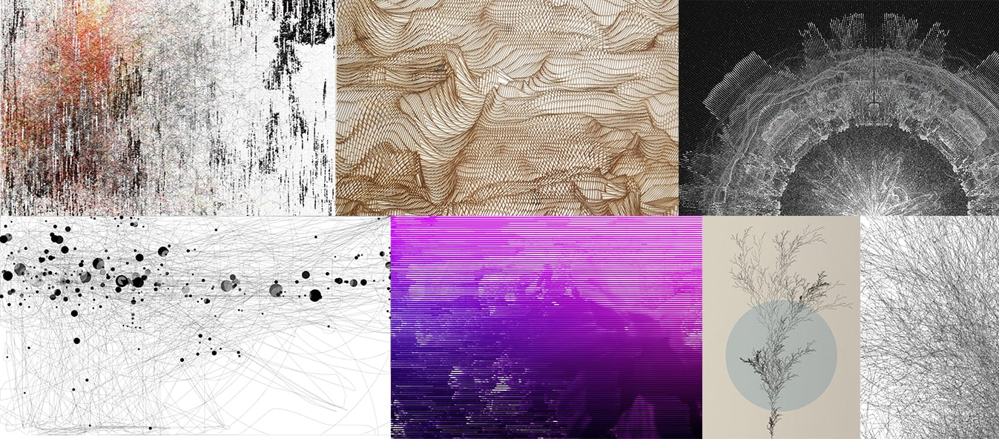
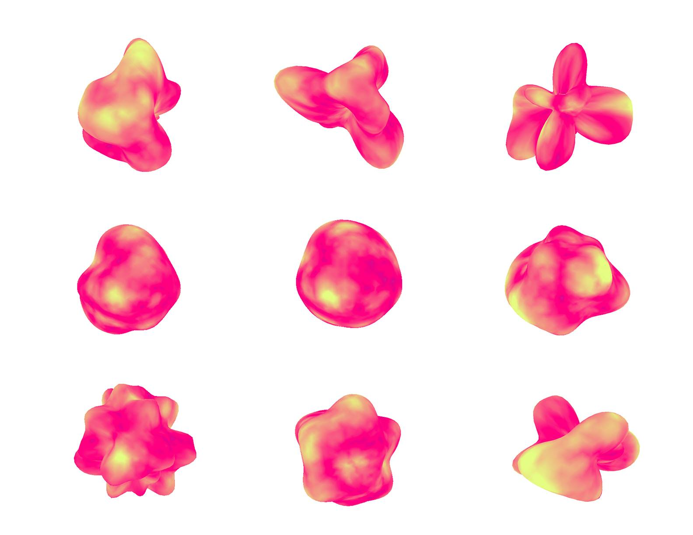

New media art refers to artworks created with new media technologies, including digital art, computer graphics, computer animation, virtual art, Internet art, interactive art, video games, computer robotics, 3D printing, cyborg art and art as biotechnology
– Wikipedia “New Media Art”
新媒体艺术是指用新媒体技术创造的艺术，包括数码艺术，计算机图像，计算机动画，视觉艺术，网络艺术，交互艺术，电子游戏，电脑机器人，3D打印，赛博格艺术，和作为生物技术的艺术。
Interactive art is a genre of art in which the viewers participate in some way by providing an input in order to determine the outcome. Unlike traditional art forms wherein the interaction of the spectator is merely a mental event, interactivity allows for various types of navigation, assembly, and/or contribution to an artwork, which goes far beyond purely psychological activity.[3] Interactivity as a medium produces meaning.
– Wikipedia “Interactive Arts”
交互艺术是艺术的一种，观者以某种形式参与来决定艺术最终的形态。不像传统艺术形式那样 –『交互』仅仅是精神性得观察，交互艺术的交互性允许各种形式的探索，重组，和/或 对于艺术的种种贡献。这样的交互性远远比精神性得活动要深入到多。交互性本身作为一种媒介，产生了意义。

与交互艺术非常相似，都是由编程语言创作，不同的是生成艺术更多地依赖于算法的，而不是用户的输入。生成艺术通常是抽象的，视觉的。生成艺术可以添加交互性，便成为交互艺术。


在1960年，纽约现代艺术馆请瑞士装置艺术家Jean Tingguely在艺术馆的雕塑园里做一个作品。Tingley 花了三个月时间收集废弃的机器零件搭建出一个自动化的机械装置。按钮一下，机械装置精准的运作，并在27分钟之后按照预定设想自燃后化为废墟。今天，废墟的残骸受到各国新媒体艺术家们的膜拜，被封为新媒体及后现代艺术的鼻祖。19世纪60年代的西方艺术界为什么突然对自动机械产生如此浓厚的兴趣？Tinguely的一把火烧掉了什么？点燃了什么？
从1960到今天的50年之间，科技和艺术发生了巨大的改变。通过这个新媒体工作坊，我们会讲评艺术家作品，并带领大家亲手创作自己的艺术作品而对当代新媒体艺术进行讨论及亲身感受。并一起探讨机械和人类，艺术和科技之间的关系，以及未来十年科技和媒体艺术的发展。